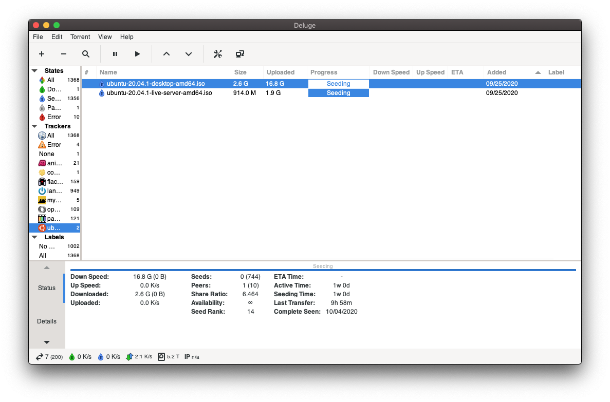
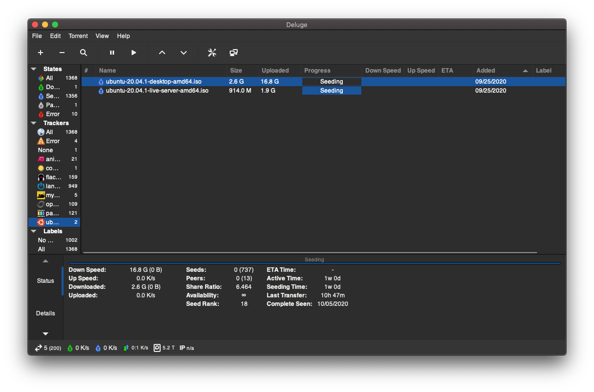
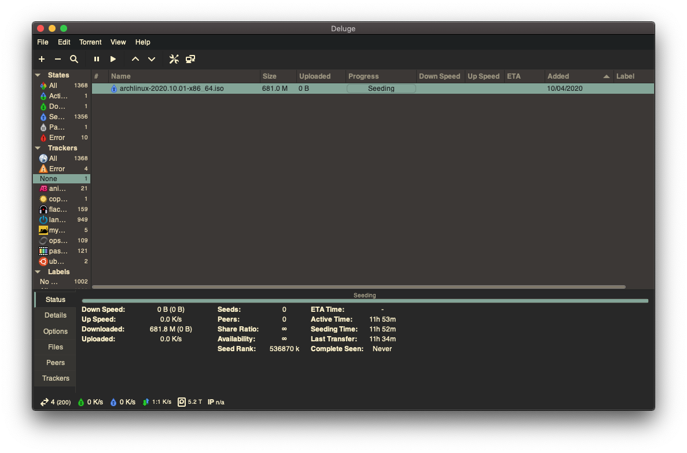

homepage - tags - github - site code
Oct 03 2020
I use Deluge for torrenting right now. It runs as a daemon on Linux clients, and the GTK interface can act as a thin client to connect to running daemons. Currently, 2.0 is in beta (so I have it installed on Arch), but the Deluge 2.0 GTK client doesn't have an official Mac or Windows build yet. There are instructions for building it, so I decided to throw together a Homebrew formula to make everything "easier" ...
The end result of this post can be found on my github repo.
While writing a formula, it can helpful to reference homebrew-core's formulae (under $(brew --repository)/Library/Taps/homebrew/homebrew-core/Formula), and Homebrew's output path ($(brew --prefix)/opt) which contains symlinks to the formulae you have installed. When testing formulae I usually take a look at the relevant output directories (in this case, /usr/local/opt/deluge-meta/) to make sure I have everything the formula should provide.
When testing new or complex rewrites of formulae, brew install --verbose is helpful but can generate a lot of output. Using a tool such as tmux helps to preserve and search the scrollback lines that are output during the build.
The deluge documentation indicates that a few Homebrew packages are required for deluge-gtk to run. Installing each of these separately with Homebrew would not preserve information that they are dependencies. Additionally, deluge is installed via pip, so we won't be able to use brew to find out rdependencies of the things we install. Homebrew supports writing formula for packages that are installable via pip, especially when they are command-line tools rather than libraries. So, we'll write a Homebrew formula for Deluge 2.0 - this will help to sandbox the installation, as well as keeping various dependencies marked as "dependencies" of our deluge-meta formula [1].
To get started, let's run brew tap-new amar1729/deluge-meta, which will create a new tap directory under Homebrew's cellar with associated files created for you (on my setup, this is /usr/local/Homebrew/Library/Taps/amar1729/homebrew-deluge-meta).
I used the Deluge install doc page and this forum post to put together a list of dependencies:
adwaita-icon-themegettext (the documentation mentions linking this)gtk+3libtorrent-rasterbarpygobject3For the python deluge module itself, I referenced the Homebrew formula for pipx (a python CLI tool), to make a simple start to this formula. Then I used homebrew-pypi-poet (see the Homebrew reference for Python Authors[2]) to create the required resource stanzas for the deluge pip package.
The required stanzas look something like this:
resource "attrs" do
url "https://files.pythonhosted.org/packages/81/d0/641b698d05f0eaea4df4f9cebaff573d7a5276228ef6b7541240fe02f3ad/attrs-20.2.0.tar.gz"
sha256 "26b54ddbbb9ee1d34d5d3668dd37d6cf74990ab23c828c2888dccdceee395594"
end
resource "Automat" do
url "https://files.pythonhosted.org/packages/80/c5/82c63bad570f4ef745cc5c2f0713c8eddcd07153b4bee7f72a8dc9f9384b/Automat-20.2.0.tar.gz"
sha256 "7979803c74610e11ef0c0d68a2942b152df52da55336e0c9d58daf1831cbdf33"
end
After putting this all together, we have a formula that looks like this:
class DelugeMeta < Formula
desc "Meta package for Deluge 2.0 dependencies"
homepage "https://deluge-torrent.org/"
url "https://files.pythonhosted.org/packages/58/9c/a612e85487c055d88da0f975a81cabf5d04dfb87a2aace2ae5946115113f/deluge-2.0.3.tar.gz"
sha256 ""
license "GPL-3.0"
depends_on "adwaita-icon-theme"
depends_on "gettext"
depends_on "gtk+3"
depends_on "libtorrent-rasterbar"
depends_on "pygobject3"
# resource stanzas snipped for brevity
def install
xy = Language::Python.major_minor_version "python3"
ENV.prepend_create_path "PYTHONPATH", libexec/"lib/python#{xy}/site-packages"
resources.each do |r|
r.stage do
system "python3", *Language::Python.setup_install_args(libexec)
end
end
system "python3", *Language::Python.setup_install_args(libexec)
(bin/"deluge-gtk").write_env_script(libexec/"bin/deluge-gtk", PYTHONPATH: ENV["PYTHONPATH"])
end
end
The first block of lines are required for every Homebrew formula, and include basic metadata about the package. Note that I haven't filled out the sha256 attribute yet - it's required, but I haven't downloaded the URL to my machine yet. You could do this in advance, and run sha256sum yourself; or you could wait for Homebrew to error and tell you the calculated SHA256, which is a little easier.
The next few lines describe this package's dependencies, which we've pulled from Deluge's install page and found the proper names for by using brew search.
As long as you have resource blocks, we'll now go through the installation for Python packages. By convention, Homebrew will install a Python environment into a formula's libexec directory if it requires any Python modules, and we add that directory to the PYTHONPATH for this formula only. We then iterate over each resource, installing it into the formula's site-packages, and then call setup_install_args one last time to install the deluge Python module after its dependencies have been installed.
Finally, we'll write an "env script" into the formula bin/ directory - if you take a look at these scripts, they are typically bash scripts that set certain environment variables (PYTHONPATH in this case) and then call a certain target executable (here, libexec/bin/deluge-gtk). This allows Homebrew to isolate an environment into each formula's own directory and set variables if required.
Now we can try building it. We'll use --only-dependencies first to pull in the dependencies first, and then use --verbose to get all the output while Homebrew builds the package.
brew install --only-dependencies deluge-meta
brew install --verbose --build-from-source deluge-meta
The first time I tried this, I had to brew unlink libtorrent-rakshasa (because I have rtorrent installed as well), and I had to fill out the proper sha256 of the pypi deluge tarball. The output will helpfully tell you if there's a mismatch or empty sha256 in your formula, at which point you can simply copy/paste it in.
After our first attempt, I re-ran the build and found that Pillow (a python module) fails to build since it depends on zlib:
The headers or library files could not be found for zlib,
a required dependency when compiling Pillow from source.
Please see the install instructions at:
https://pillow.readthedocs.io/en/latest/installation.html
Following what Pillow tells us, just add zlib as a build dependency:
depends_on "zlib" => :build
Now, running the build again works! Woo! Let's check it out by running deluge-gtk:

In the terminal I still get an error about Deluge being seemingly unable to use gettext properly:
Unable to initialize gettext/locale!
'ngettext'
Traceback (most recent call last):
File "/usr/local/Cellar/deluge-meta/2.0.3/libexec/lib/python3.8/site-packages/deluge/i18n/util.py", line 118, in setup_translation
builtins.__dict__['_n'] = builtins.__dict__['ngettext']
KeyError: 'ngettext'
Not sure if this is a problem with a build, or supposed to happen currently (since Deluge 2.0 only supports English right now), or the environment (maybe locales are weird on MacOS?). Whatever, it works.
Initially, I wanted to make sure that deluge-gtk (the GUI) was working, but once we get the formula building and running, we may as well update the formula to write out all the deluge* scripts provided by Deluge. I changed the hard-coded deluge-gtk env_script line to one that works on all the targets:
# (bin/"deluge-gtk").write_env_script(libexec/"bin/deluge-gtk", PYTHONPATH: ENV["PYTHONPATH"])
%w[deluge deluge-console deluge-gtk deluge-web deluged].each do |cmd|
(bin/cmd).write_env_script(libexec/"bin/#{cmd}", PYTHONPATH: ENV["PYTHONPATH"])
end
test BlockThis formula doesn't have a test block right now, although those can be helpful for CI to quickly find issues on updates. I know deluge-gtk works for me right now, but I may add this later on if the deluge pip module receives more updates without a MacOS .App build in sight.
virtualenv_install_with_resourcesAccording to Homebrew documentation[2], most Python formulae should use virtualenv_install_with_resources now, but when I tried to use this method I ran into a few issues:
Error: An exception occurred within a child process:
FormulaUnknownPythonError: The version of Python to use with the virtualenv in the `amar1729/deluge-meta/deluge-meta` formula
cannot be guessed automatically because a recognised Python dependency could not be found.
If you are using a non-standard Python depedency, please add `:using => "python@x.y"` to
`virtualenv_install_with_resources` to resolve the issue manually.
When I tried adding a :using => "python@3.8" line, I ran into an issue concerning missing headers while building Pillow. Figured I'd look at it later, since I have a working build now anyway.
Before you push, it can be helpful to run brew style --fix <formula>.rb to lint and fix issues in your formula. While not extremely important for taps, this is a necessary step if you ever want to submit a PR to homebrew-core.
This wouldn't be the blog it is without a little nod to useless ricing!
The deluge-gtk GUI looks fine, but we want dark mode everything, right? My last post on theming Deluge concerned Deluge 1.3, but now we're running the beta Deluge 2.0. In the interim, Deluge has switched from GTK 2.0 to GTK 3.0, and setting the theme for the two is slightly different. The arch wiki tells us that GTK 2 expects GTK2_RC_FILES to be set to a gtkrc, while GTK 3 expects GTK_THEME to name your theme.
On MacOS, some formula seems to already have installed the Adwaita theme (gtk+3 itself, since Adwaita is the default theme?), so we can actually launch Deluge like this:
GTK_THEME=Adwaita:dark deluge-gtk

If you've been following along, you know I like gruvbox colors, so I found a gruvbox GTK theme and cloned it into ~/.themes. Then, I created a config for GTK 3:
# $XDG_CONFIG_HOME/gtk-3.0/settings.ini
# ^ this is typically ~/.config/gtk-3.0/settings.ini
[Settings]
gtk-theme-name = gruvbox-gtk
# ^ this gruvbox theme is dark by default
# otherwise, you would use the following:
# gtk-application-prefer-dark-theme = true
And running deluge-gtk now gives us nice gruvbox colors (consistent with this site!):

Homebrew formulae management can be a less powerful compared to aspects of other package managers. For example, there's no straightforward way to recursively uninstall a package (use homebrew-rmtree to do this). There's also no way to install a package while marking it as a dependency (e.g. pacman -S --asdeps) which is helpful to have when you later want to remove all orphaned dependencies from your system.